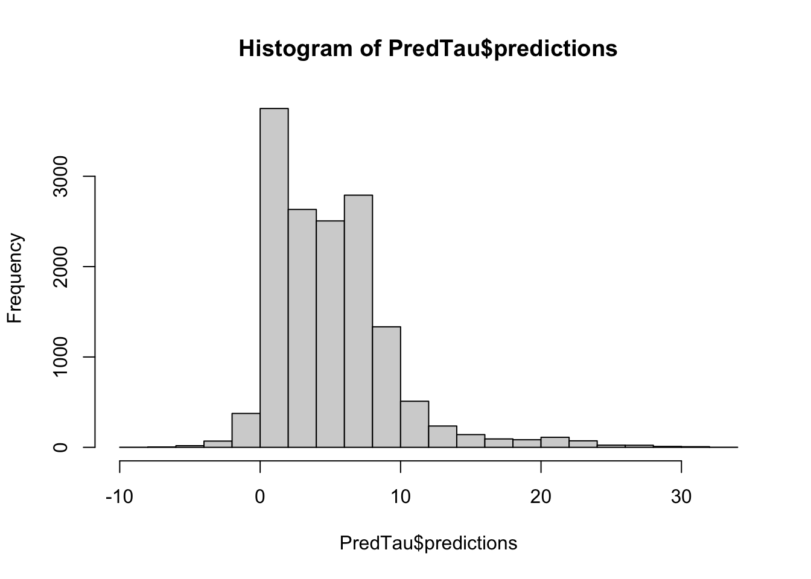
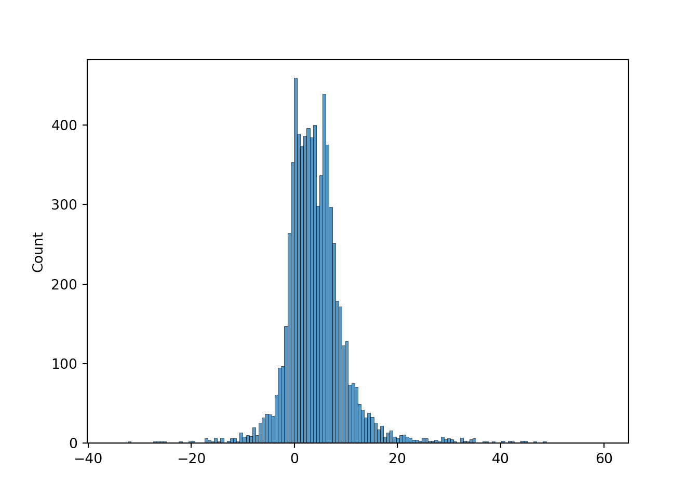

library(tidyverse)
library(grf)
library(DoubleML)
library(mlr3verse)
Data_R <- read_csv("ExampleData/Example.csv")
Group <- sample(0:1,nrow(Data_R),replace = TRUE)
Y <- Data_R$Price
D <- Data_R$Reform
X <- Data_R |>
select(
-Price,
-Reform
)7 異質性の探索
条件付き平均差 \(\tau(X)=E[Y|D=1,X]-E[Y|D=0,X]\)の(ノンパラメトリックな)推定値を異質性のシグナルとして活用
一般に、条件付きの平均差のノンパラメトリックな推定値について、推定誤差を評価するのが難しいため
効果の異質性の”シグナル”として使う (Chernozhukov et al. 2018; Kallus 2022)
\(E[\tau(X)|\tau(X)\le Median(\tau(X))]\) を推定
\(\tau(X)\) はCausal Forest (Wager and Athey 2018; Athey, Tibshirani, and Wager 2019) で推定
7.1 設定
EstCF <- causal_forest(
X = X[Group == 0,],
W = D[Group == 0],
Y = Y[Group == 0]
)
PredTau <- EstCF |>
predict(X)
hist(PredTau$predictions)
Task <- double_ml_data_from_matrix(
X = X[Group == 1,],
y = Y[Group == 1],
d = D[Group == 1]
)
EstDML <- DoubleMLPLR$new(
Task,
lrn("regr.lm"),
lrn("regr.lm")
)
EstDML$fit()INFO [21:02:33.207] [mlr3] Applying learner 'regr.lm' on task 'nuis_l' (iter 1/5)
INFO [21:02:33.229] [mlr3] Applying learner 'regr.lm' on task 'nuis_l' (iter 2/5)
INFO [21:02:33.239] [mlr3] Applying learner 'regr.lm' on task 'nuis_l' (iter 3/5)
INFO [21:02:33.246] [mlr3] Applying learner 'regr.lm' on task 'nuis_l' (iter 4/5)
INFO [21:02:33.253] [mlr3] Applying learner 'regr.lm' on task 'nuis_l' (iter 5/5)
INFO [21:02:33.334] [mlr3] Applying learner 'regr.lm' on task 'nuis_m' (iter 1/5)
INFO [21:02:33.515] [mlr3] Applying learner 'regr.lm' on task 'nuis_m' (iter 2/5)
INFO [21:02:33.522] [mlr3] Applying learner 'regr.lm' on task 'nuis_m' (iter 3/5)
INFO [21:02:33.528] [mlr3] Applying learner 'regr.lm' on task 'nuis_m' (iter 4/5)
INFO [21:02:33.534] [mlr3] Applying learner 'regr.lm' on task 'nuis_m' (iter 5/5)EstDML================= DoubleMLPLR Object ==================
------------------ Data summary ------------------
Outcome variable: y
Treatment variable(s): d
Covariates: X1, X2, X3, X4
Instrument(s):
No. Observations: 7375
------------------ Score & algorithm ------------------
Score function: partialling out
DML algorithm: dml2
------------------ Machine learner ------------------
ml_l: regr.lm
ml_m: regr.lm
------------------ Resampling ------------------
No. folds: 5
No. repeated sample splits: 1
Apply cross-fitting: TRUE
------------------ Fit summary ------------------
Estimates and significance testing of the effect of target variables
Estimate. Std. Error t value Pr(>|t|)
d 3.2798 0.5999 5.468 4.56e-08 ***
---
Signif. codes: 0 '***' 0.001 '**' 0.01 '*' 0.05 '.' 0.1 ' ' 1Q <- quantile(PredTau$predictions,0.5)
Task <- double_ml_data_from_matrix(
X = X[Group == 1 & PredTau$predictions >= Q,],
y = Y[Group == 1 & PredTau$predictions >= Q],
d = D[Group == 1 & PredTau$predictions >= Q]
)
EstDML <- DoubleMLPLR$new(
Task,
lrn("regr.lm"),
lrn("regr.lm")
)
EstDML$fit()INFO [21:02:33.617] [mlr3] Applying learner 'regr.lm' on task 'nuis_l' (iter 1/5)
INFO [21:02:33.624] [mlr3] Applying learner 'regr.lm' on task 'nuis_l' (iter 2/5)
INFO [21:02:33.630] [mlr3] Applying learner 'regr.lm' on task 'nuis_l' (iter 3/5)
INFO [21:02:33.637] [mlr3] Applying learner 'regr.lm' on task 'nuis_l' (iter 4/5)
INFO [21:02:33.643] [mlr3] Applying learner 'regr.lm' on task 'nuis_l' (iter 5/5)
INFO [21:02:33.687] [mlr3] Applying learner 'regr.lm' on task 'nuis_m' (iter 1/5)
INFO [21:02:33.693] [mlr3] Applying learner 'regr.lm' on task 'nuis_m' (iter 2/5)
INFO [21:02:33.698] [mlr3] Applying learner 'regr.lm' on task 'nuis_m' (iter 3/5)
INFO [21:02:33.704] [mlr3] Applying learner 'regr.lm' on task 'nuis_m' (iter 4/5)
INFO [21:02:33.710] [mlr3] Applying learner 'regr.lm' on task 'nuis_m' (iter 5/5)EstDML================= DoubleMLPLR Object ==================
------------------ Data summary ------------------
Outcome variable: y
Treatment variable(s): d
Covariates: X1, X2, X3, X4
Instrument(s):
No. Observations: 3678
------------------ Score & algorithm ------------------
Score function: partialling out
DML algorithm: dml2
------------------ Machine learner ------------------
ml_l: regr.lm
ml_m: regr.lm
------------------ Resampling ------------------
No. folds: 5
No. repeated sample splits: 1
Apply cross-fitting: TRUE
------------------ Fit summary ------------------
Estimates and significance testing of the effect of target variables
Estimate. Std. Error t value Pr(>|t|)
d 5.3312 0.8785 6.069 1.29e-09 ***
---
Signif. codes: 0 '***' 0.001 '**' 0.01 '*' 0.05 '.' 0.1 ' ' 1import pandas as pd
import sklearn.model_selection as model_selection
Data_Python = pd.read_csv('ExampleData/Example.csv')
y = Data_Python['Price']
d = Data_Python['Reform']
x = Data_Python.drop(['Price','Reform'],axis=1).values
y_train, y_test,d_train,d_test,x_train,x_test = model_selection.train_test_split(
y,
d,
x,
train_size = 0.5
)import econml.dml as dml
import sklearn.linear_model as Linear
import matplotlib.pyplot as plt
import seaborn as sns
est_cf = dml.CausalForestDML(
model_y = Linear.LinearRegression(),
model_t = Linear.LinearRegression(),
n_estimators=2000
)
est_cf = est_cf.fit(y_train, d_train, X = x_train, W=None)
pred_tau = est_cf.effect(x_test)
fig = plt.figure()
sns.histplot(pred_tau)
import doubleml as DML
Task = DML.DoubleMLData.from_arrays(x_test, y_test, d_test)
FitPLR = DML.DoubleMLPLR(
Task,
Linear.LinearRegression(),
Linear.LinearRegression(),
n_folds = 2
)
FitPLR.fit(store_predictions = True) ================== DoubleMLPLR Object ==================
------------------ Data summary ------------------
Outcome variable: y
Treatment variable(s): ['d']
Covariates: ['X1', 'X2', 'X3', 'X4']
Instrument variable(s): None
No. Observations: 7397
------------------ Score & algorithm ------------------
Score function: partialling out
DML algorithm: dml2
------------------ Machine learner ------------------
Learner ml_l: LinearRegression()
Learner ml_m: LinearRegression()
------------------ Resampling ------------------
No. folds: 2
No. repeated sample splits: 1
Apply cross-fitting: True
------------------ Fit summary ------------------
coef std err t P>|t| 2.5 % 97.5 %
d 3.580131 0.562229 6.36774 1.918334e-10 2.478182 4.682081import numpy as np
Q = np.quantile(a=pred_tau, q=0.5)
Task = DML.DoubleMLData.from_arrays(x_test[pred_tau >= Q], y_test[pred_tau >= Q], d_test[pred_tau >= Q])
FitPLR = DML.DoubleMLPLR(
Task,
Linear.LinearRegression(),
Linear.LinearRegression(),
n_folds = 2
)
FitPLR.fit(store_predictions = True) ================== DoubleMLPLR Object ==================
------------------ Data summary ------------------
Outcome variable: y
Treatment variable(s): ['d']
Covariates: ['X1', 'X2', 'X3', 'X4']
Instrument variable(s): None
No. Observations: 3699
------------------ Score & algorithm ------------------
Score function: partialling out
DML algorithm: dml2
------------------ Machine learner ------------------
Learner ml_l: LinearRegression()
Learner ml_m: LinearRegression()
------------------ Resampling ------------------
No. folds: 2
No. repeated sample splits: 1
Apply cross-fitting: True
------------------ Fit summary ------------------
coef std err t P>|t| 2.5 % 97.5 %
d 4.153337 0.774872 5.360028 8.320895e-08 2.634615 5.672059